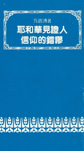

主頁 Home → 求真文選目錄 Books → 耶和華見證人的錯謬 The Fallacies of Jehovah's Witnesses

九 耶和華見證人的錯謬
The Fallacies of Jehovah's Witnesses
- 1. 耶和華見證人所信的是什麼？
- 2. 耶和華上帝和基督耶穌
- 3. 亞當和他所受的懲罰
- 4. 關於「至尊地位」的爭論
- 5. 基督的犧牲作贖價
- 6. 基督的第二次臨在和新世界